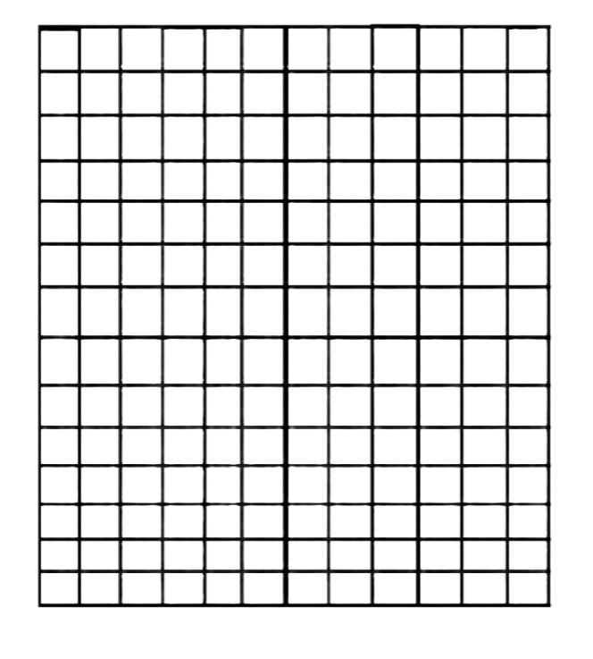
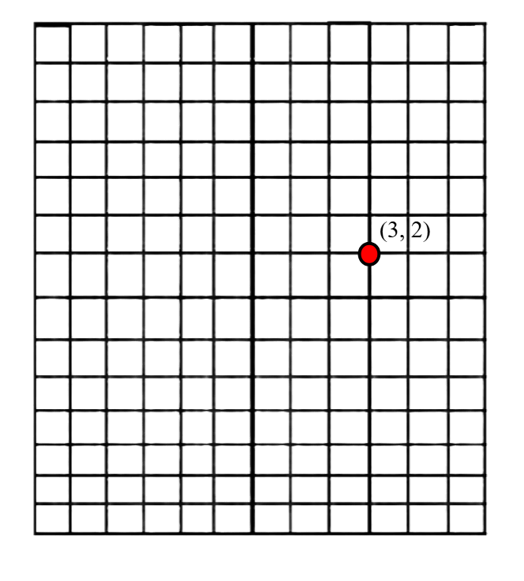
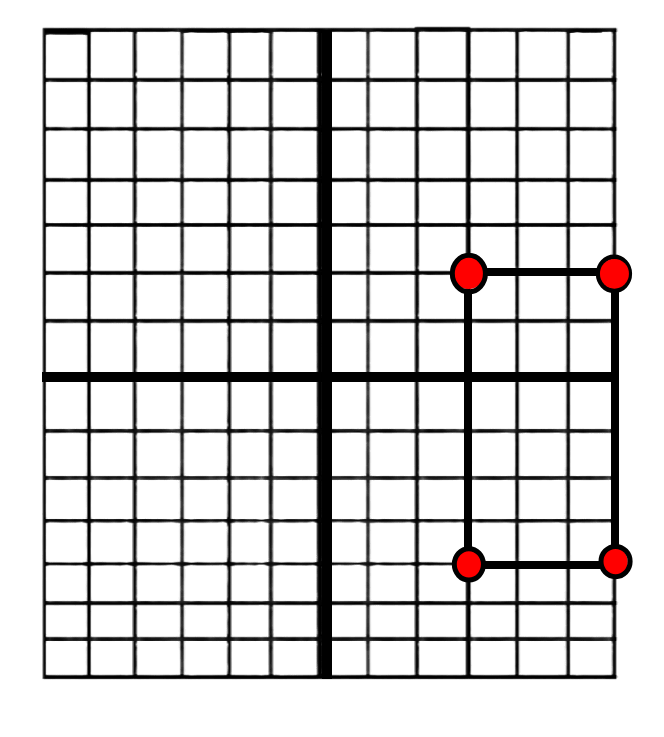
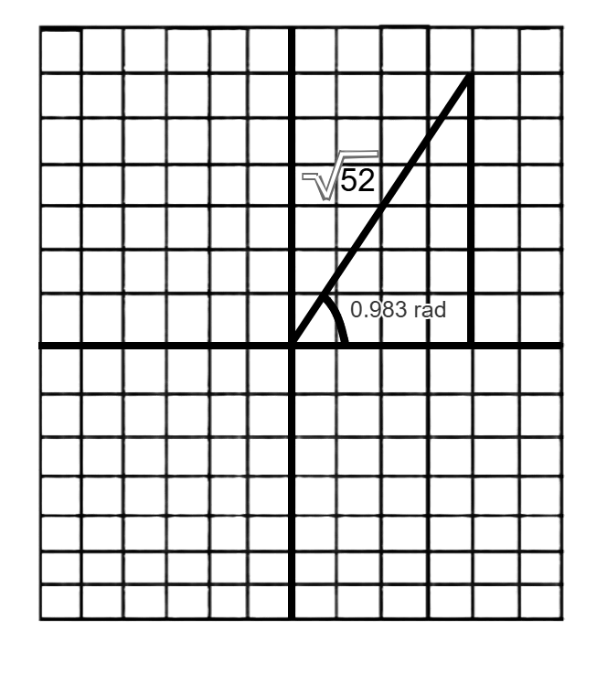

Complex Plane Coordinate System
Introduction
The complex plane (also called Argand Diagram) coordinate system is the Cartesian coordinate system with two lines being the x-axis and the y-axis, but instead of the y-axis being the y value, it’s all the imaginary numbers…

Examples of complex numbers on this coordinate system is 3 + 2i, 5i - 3. This basically translates to (3, 2) since the real part of the complex number is 3 and the imaginary part is 2…

Complex numbers on a graph can also form 2D shapes as multiple points can be plotted in complex notation…
(3, 2i), 6(1, i/2), (3, -4i), (6, -4i)

Polar Coordinates Conversion
To convert complex plane coordinates or just cartesian coordinates to polar coordinates. First find out the square root of both of the x and y values squared added together, we will name this value, “r”...
(4, 6i)
r = √x² + y²
r = √42 + 62
r = √16 + 36
r = √52
r is the square root of 52…
 Now we figure out another value named theta (ùöπ) that is the arctan of the coordinate of y over x‚Ķ
Now we figure out another value named theta (ùöπ) that is the arctan of the coordinate of y over x‚Ķ
ùöπ = tan-1(y / x)
ùöπ = arctan(6 / 4)= 0.983 rad
Since theta is 0.983 radians, now we can check our answers for both sides to make sure that we got the correct value of theta by using cosine and sine…
x = r * cos(ùöπ) = √52 * cos(0.983 rad) = √52 * 0.555 = 4.002 CLOSE ENOUGH
y = r * sin(ùöπ) = √52 * sin(0.983 rad) = √52 * sin(0.983 rad) = √52 * 0.832 = 6.00008 CLOSE ENOUGH
Since the x and y values are very close to the coordinates that are (4, 6) we can say that the theta value is correct. This formula can also be used to convert polar coordinates back into Cartesian coordinates…

Done? Here are other Links
Back to Main Page
Back to Informational
If you are seeing this, your clock is missing a ding-dong
If you are seeing this, your calender needs a pin or two.